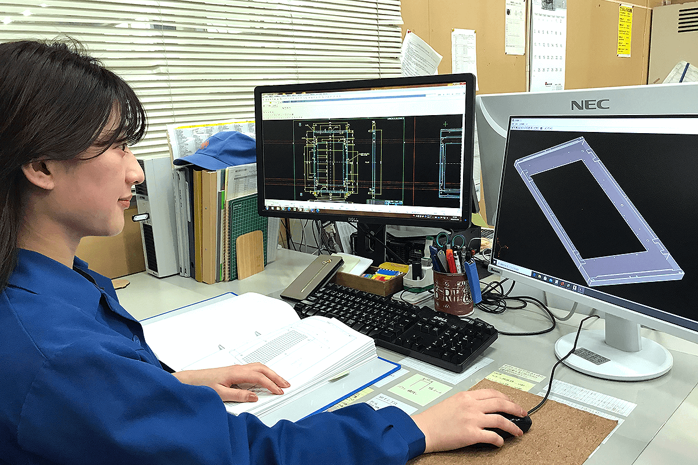
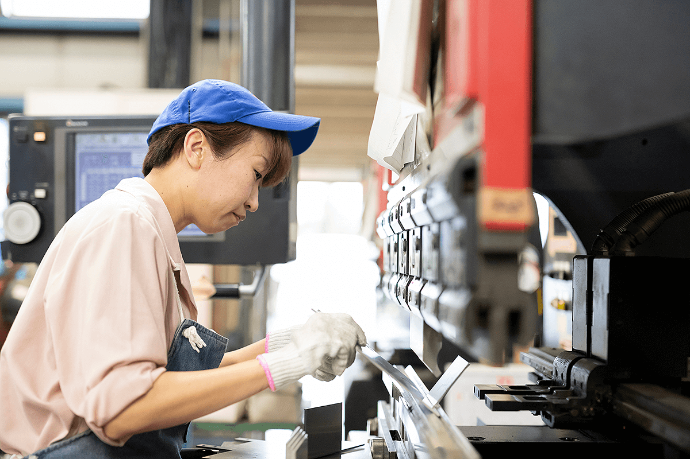
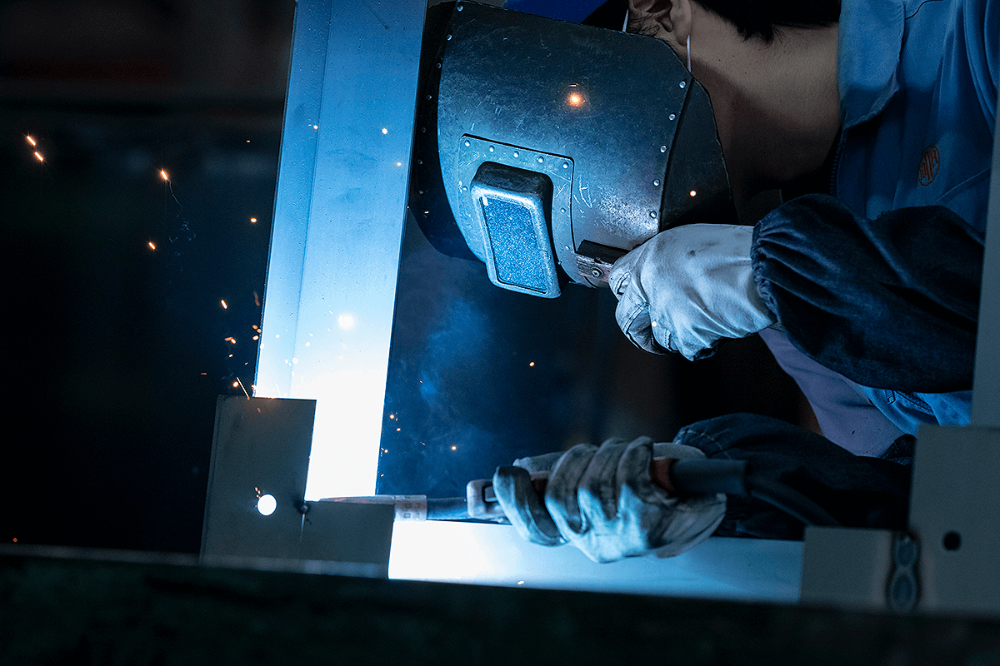
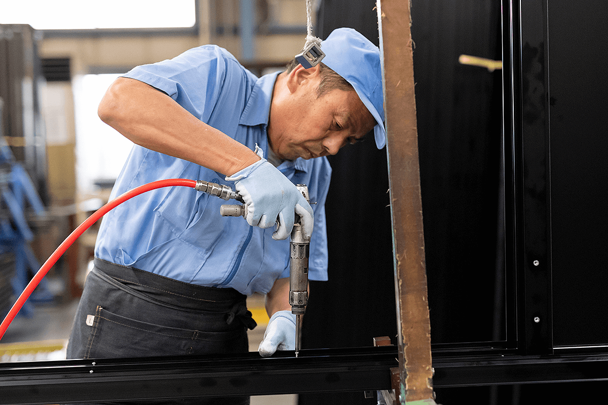

設計
お客さまのご要望をもとに、CADソフトで設計図面を作成します。
NAGAMURA / RECRUIT
RECRUIT
“ありがとう”を道しるべに
お客様と一緒に考え、製品に付加価値と想いを込める。長村製作所が大切にしているものづくりです。社員一人ひとりの個性を尊重し、対話を重ねながら能力を伸ばし合っています。求めるのは「素直さ」「向上心」「行動力」を持つ人。挑戦する人を支えます。

お客さまのご要望をもとに、CADソフトで設計図面を作成します。

金属板の切断、穴開け、曲げなどの加工作業を行います。

素材と用途に合わせて強度のある美しい製品を製作します。

部品を組立図面に従って完成品に仕上げ、品質を確認します。
採用サイトには2025年8月1日時点の従業員数59名、2024年度売上高10.3億円、男女比68%／32%、平均勤続年数13年、公衆電話BOX製造会社は国内2社と掲載されています。女性社員のワーキングマザー比率73.6%、育児休業取得・復職率100%、女性管理職比率22.2%も同サイトの掲載値です。
各種社会保険完備／通勤交通費全額支給／半日・1時間単位の有給休暇／資格手当／社内表彰制度／最大75歳までの再雇用制度
出産・育児休業制度／育児のための短時間勤務／子どものための看護休暇／介護休業制度／慶弔制度／退職金制度／健康診断（人間ドック）／リロクラブ